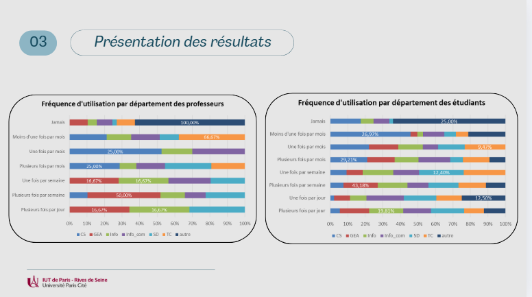

Description
On a réalisé une enquète en première année sur l'utilisation de l'intelligence artificielle, on a donc repris cette enquête pour le redresser et l'estimer sur la population de l'IUT.
Étapes
Voici les étapes principales que nous avons suivies :
- Collecte des données : Importation des données vers Excel.
- Nettoyage des données : Redressement sur SAS.
- Analyse exploratoire : Analyse statistique descriptive et visualisation des données sur Excel.
Outils utilisés
| Catégorie | Outil | Description |
|---|---|---|
| Traitemen et Redressement | SAS | Manipulation et traitement des données. |
| Visualisations | Excel, RStudio | Création de graphiques et de visualisations. |
Résultats
Le résultat final de notre analyse est présenté ci-dessous :
On peut en dire que c'est toujours bien de travailler sur un echantillon mais aussi de voir comment elle est représenté sur une population .